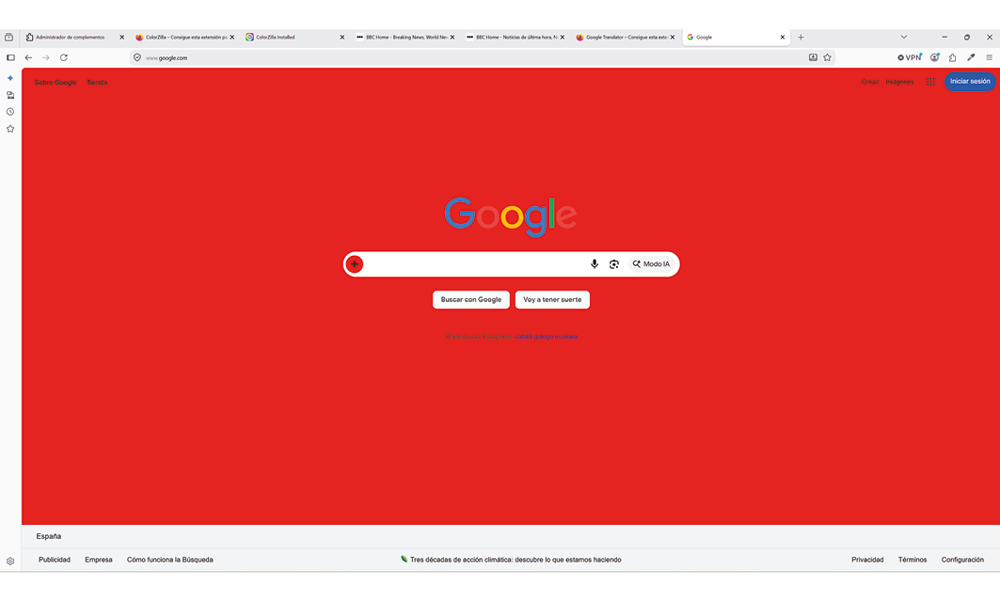
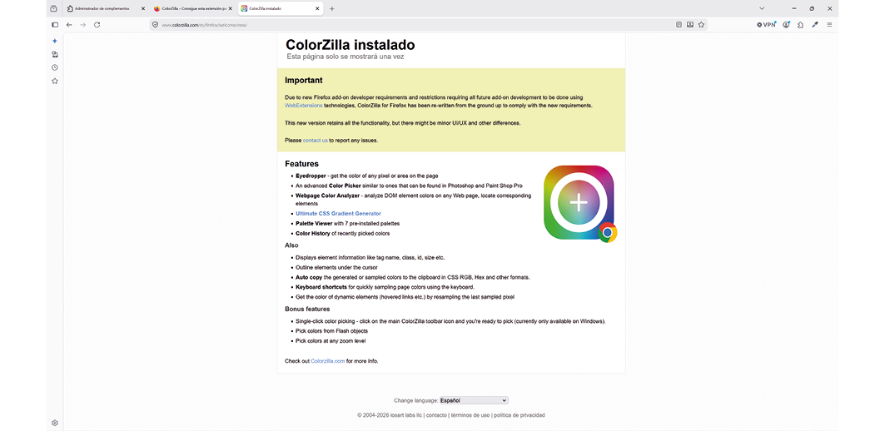
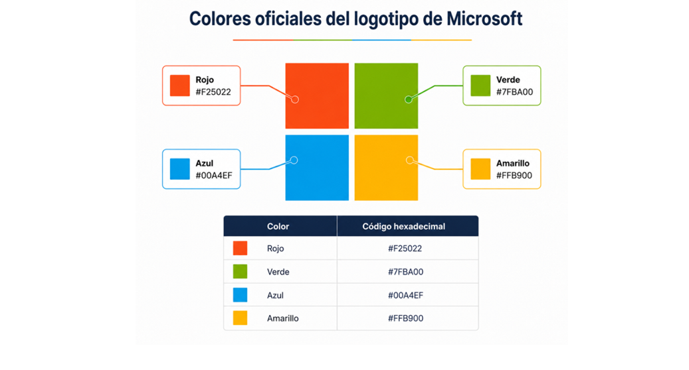
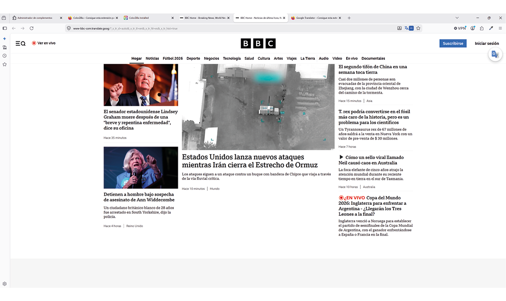

PUBLICAR PÁGINAS WEB
Unidad Didáctica 4. Pruebas y verificación de páginas web
Publicación de páginas web (MF0952_2)
Módulo formativo:
Actividad 1 Caso práctico.
Alumno: Alfonso Rubio Rioseras
Fecha: Julio 2026
Pregunta 1. Desde Firefox usando el editor de estilo (F12) cambie la apariencia de la web de Google. Cambie el color de fondo de la página de Google para que se vea de color rojo.

Pregunta 2. Instalación de complementos para el navegador Firefox.
a. Instale el complemento “ColorZilla” para Firefox.

PREGUNTAS/ACTIVIDADES A REALIZAR
b. ¿Qué utilidad tiene este complemento?
ColorZilla para Firefox es un complemento muy útil para diseñadores y desarrolladores web, ya que permite identificar y trabajar con los colores de cualquier página web de forma rápida y precisa.
Sus principales utilidades son:
Identificar colores: Permite seleccionar cualquier color visible en una página web y obtener su código en formatos como HEX, RGB o HSL.
Copiar códigos de color: Facilita copiar el código hexadecimal de un color para utilizarlo posteriormente en archivos HTML, CSS o programas de diseño.
Selector de color avanzado (Color Picker): Incluye un editor para crear, modificar y seleccionar colores personalizados.
Generador de degradados CSS: Ayuda a crear gradientes y obtener automáticamente el código CSS correspondiente.
Historial de colores: Guarda los últimos colores seleccionados para reutilizarlos fácilmente.
Información de elementos: Permite inspeccionar algunos estilos de los elementos de una página, como colores de fondo, bordes o texto.
En resumen, ColorZilla es una herramienta que agiliza el trabajo de diseño y desarrollo web, ya que permite identificar con precisión los colores de cualquier sitio web y reutilizarlos fácilmente en nuevos proyectos, garantizando una mayor coherencia en el diseño y ahorrando tiempo durante el desarrollo.

c. Utilice esta herramienta para obtener el color hexadecimal de los colores del logo de Microsoft.
d. Instale el complemento “Google Translator”. Entre en la web de la bbc en inglés www.bbc.com
página completa usando este complemento.
y traduzca la página completa usando este complemento.
